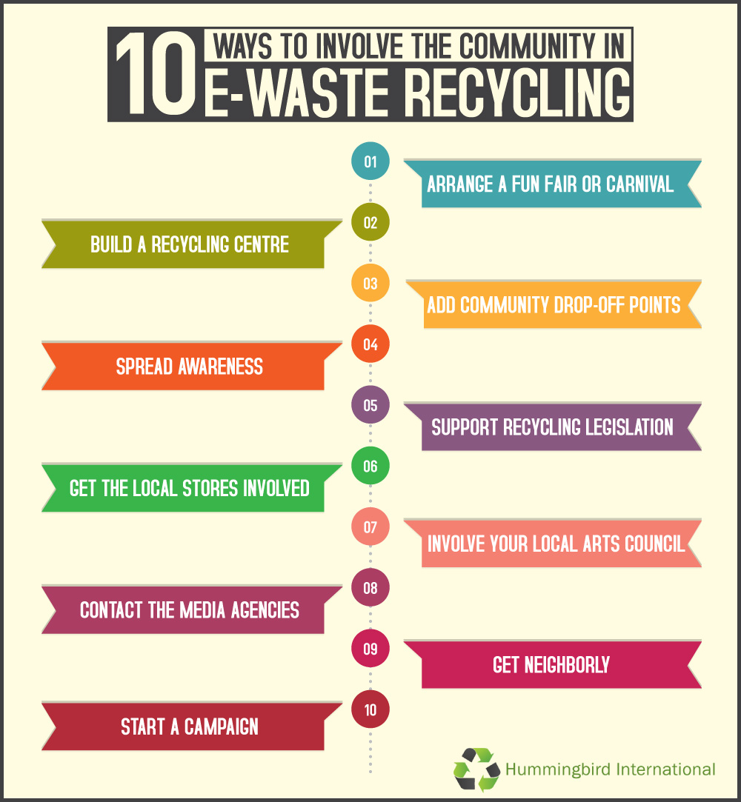
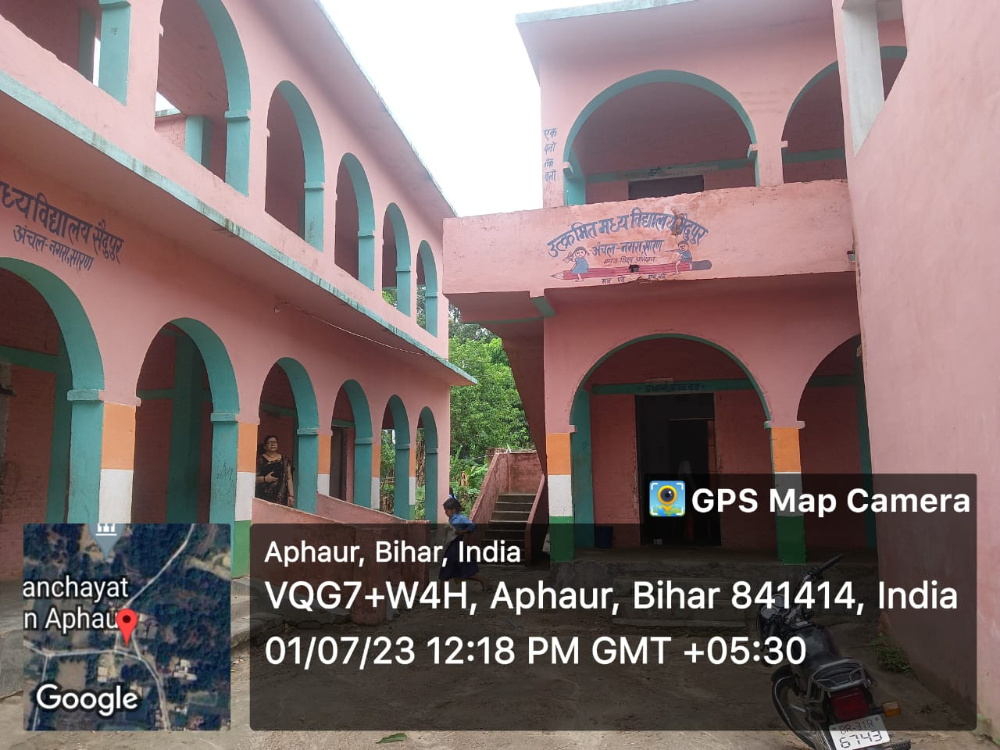
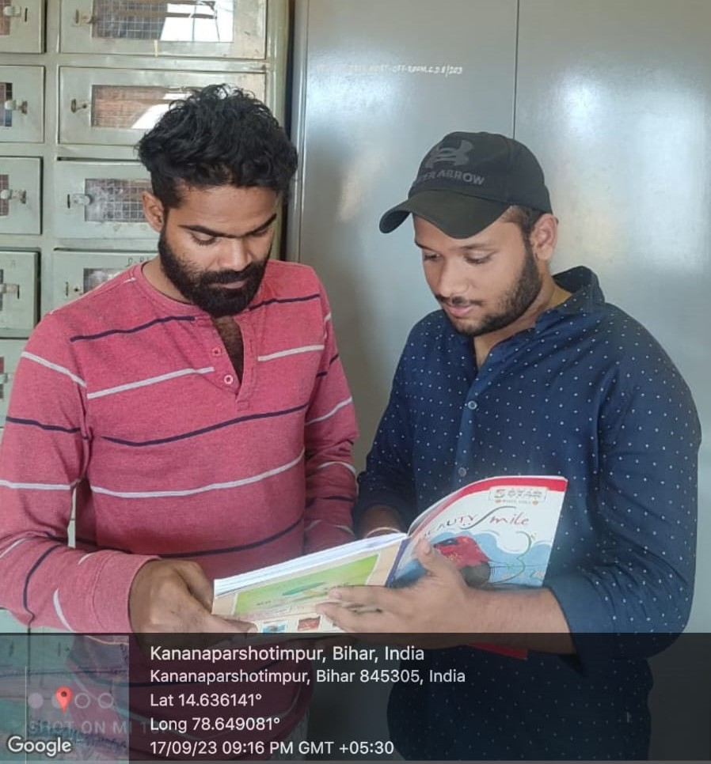

MUNICIPAL SOLID WASTE MANAGEMENT
Municipal Solid Waste Management involves the application of principle of Integrated Solid Waste Management (ISWM) to municipal waste. ISWM is the application of suitable techniques, technologies and management programs covering all types of solid wastes from all sources to achieve the twin objectives of
Role of Training in Implementing a Waste Management System
Policies, procedures, and plans set out the rules and guidelines that your workers should follow to secure workplace efficiency as well as guarantee everyone’s health and safety.
The best way to engrain these guidelines into your workers is by putting together a robust training program on your waste management systems with the help of a digital operations platform.

Technology has made giant strides and today India is sitting on the cusp of digital revolution, which is going to reshape the social, economical, political and the cultural landscape of the country. Indian IT and IT enabled companies have done remarkably well, all over the world, in terms of services and innovations.
How to Conduct a Food Waste Audit in 6 Steps
Meet the team


Cleanliness around Neighbourhood Program


Organized By:Utkramit Madhya Vidyalaya, GHUGHUA ,EAST CHAMPARN (Bihar)
Gram Pradhan appreciated the initiative taken by the Utkramit madhya vidyalaya GHUGHUA for spreading the awareness about Cleanliess around Neighbourhood among school students.
Venue:
utkramit madhya vidyalaya GHUGHUA CHAMPARAM Bihar
Date of visit:
01/07/23
TIME
11:00 AM
Topics Covered
- The state of cleanliness in our neighbourhoods plays a vital role in the overall well-being of residents and the environment.
- The significance of maintaining cleanliness in our local communities and emphasizes the joint responsibility that residents and local authorities share in ensuring a clean and sustainable future.
- The positive effects of a clean neighbourhood on community health, social cohesion, and overall quality of life.
- It also addresses the economic benefits of cleanliness, such as increased property values and tourism potential.
- By fostering a sense of shared responsibility, we can pave the way for a cleaner, healthier, and more sustainable future.
